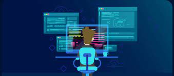

Por que aprender a programar?
A pandemia acelerou o processo de digitalização das empresas e demandou a contratação de profissionais de TI qualificados para atender às necessidades emergentes.
O LinkedIn divulgou um levantamento que aponta nove dos dez cargos mais procurados no Brasil, entre junho e julho deste ano, são relacionados à TI, como engenheiro
de software, arquiteto de software, desenvolvedor front-end, entre outros.
Para quem deseja ingressar nesse mercado e ter sucesso como desenvolvedor web, existem cinco motivos que reforçam a importância de aprender nessa área.
1. Mercado em crescimento, altos salários
O mercado de TI está em constante crescimento, mas há uma escassez de profissionais qualificados. O setor deve criar 420.000 novos empregos até 2024, mas 150.000 desses empregos podem ficar sem preenchimento. As instituições de ensino superior não estão produzindo graduados suficientes para atender à demanda. Os salários para profissionais de TI no Brasil variam de R$4.000 a R$15.000, dependendo do nível de conhecimento e da localidade do profissional, de acordo com uma pesquisa da plataforma de empregos Geekhunter.
2. Programação está em todo lugar
A pandemia acelerou a transformação digital das empresas, levando muitas a se adaptarem ao mercado online. Isso aumentou a demanda por profissionais de programação, que são responsáveis pelo desenvolvimento de sites, e-commerces, aplicativos, jogos e aulas online. O trabalho do programador é fundamental para criar e manter essas tecnologias, sendo necessário um alto nível de qualificação e dedicação na escrita de códigos.
3. Desenvolvimento de habilidades interpessoais
A área exige o desenvolvimento de muitas habilidades interpessoais. Algumas que acredito serem as mais impactantes são aprender a aprender, como resolver problemas, comunicação e trabalho em equipe, e, por último, perseverança.
Aprender a aprender
O profissional deve estar em aprimoramento contínuo, pois o mercado de TI muda constantemente, com atualizações de programas, novas linguagens e recursos, exigindo a habilidade de ‘aprender a aprender’.
Resolver problemas
Muitas vezes, quando você está ‘codando’, é necessário quebrar o problema em pequenos problemas, além de usar muito de lógica e saber priorizar o que é mais importante. Essas habilidades ajudam a desenvolver o pensamento estruturado e uma nova perspectiva sobre como solucionar problemas para os profissionais desse segmento.
Comunicação e trabalho em equipe
Outra área importante que a programação pode ajudar é no desenvolvimento de habilidades de comunicação e trabalho em equipe. No dia a dia do trabalho, o ‘dev’ [do inglês ‘developer’] não vai estar sozinho, pois geralmente as entregas são feitas com uma grande equipe por trás.
Perseverança
Por último, a programação pode ajudar a desenvolver a perseverança. Para fazer um projeto, você vai, muitas vezes, encontrar dificuldades, centenas de ‘bugs’ e entraves. Vencer isso todos os dias, com certeza, vai lhe ajudar a refinar a sua capacidade de persistir.
Todas essas práticas serão transferidas para o seu repertório de conhecimento e poderão ajudá-lo até com outras situações do seu cotidiano.4. Flexibilidade
A pandemia acelerou a digitalização de empresas, aumentando a demanda por profissionais de TI qualificados. De acordo com uma pesquisa, nove das dez principais posições de emprego preferidas no Brasil estão relacionadas à TI. A indústria oferece altos salários e flexibilidade para o trabalho remoto. Empresas como Google, Facebook, Twitter e Slack estenderam as políticas de trabalho remoto, sinalizando uma mudança permanente na forma como as empresas veem o trabalho remoto. Isso poderia ter implicações dramáticas para os desenvolvedores de software, que podem não se sentir mais obrigados a se mudar para centros tecnológicos tradicionais para o emprego. Os benefícios do trabalho remoto incluem uma ampla gama de candidatos para escolher e permitir que os funcionários vivam em cidades mais acessíveis com um melhor equilíbrio entre vida profissional e pessoal.
5. Atuação sem diploma
De fato, a busca por candidatos com habilidades-chave tem sido uma tendência crescente no mercado de trabalho. As empresas estão percebendo que habilidades técnicas podem ser ensinadas,
mas habilidades comportamentais, como comunicação efetiva, liderança e trabalho em equipe, são mais difíceis de desenvolver.
Além disso, muitos candidatos talentosos podem não ter acesso a uma educação formal de qualidade, mas ainda assim possuem habilidades valiosas para oferecer. A eliminação da exigência de
graduação pode ajudar a nivelar o campo de atuação e dar oportunidade a um grupo mais diverso de candidatos. No entanto, é importante ressaltar que a educação ainda é um fator importante para
o sucesso profissional, e que a graduação pode fornecer uma base sólida para o desenvolvimento de habilidades-chave.
Melhores cursos de programação para se fazer
| Curso | Objetivo | Duração | Valor |
|---|---|---|---|
| Alura | Aprender lógica de programação com as linguagens mais utilizadas no mundo, além de criar suas primeiras páginas web utilizando HTML, CSS e JavaScript | 75H | 85 - 120R$ mensais |
| Udemy | Aprender a resolver algoritmos em portugol e iniciação à linguagem C | 12H | 190R$ Mensais |
| USP | Aprender o básico e o avançado sobre software, além de ferramentas DevOps e programação | 18 meses | 690R$ Mensais |
| Cisco | Aprender python desde o início ao avançado | 75H | Grauito |
| Microsoft | Aprender o básico sobre C#, e como identificar erros de sintáxe e operadores mal utilizados | 27Min | Gratuito |
| Curso em Vídeo | Aprender diversas linguagens de programação, incluindo HTML, CSS e JavaScript, além de possuir diversos outros cursos para a área da informática | 20 - 40H | Gratuito |